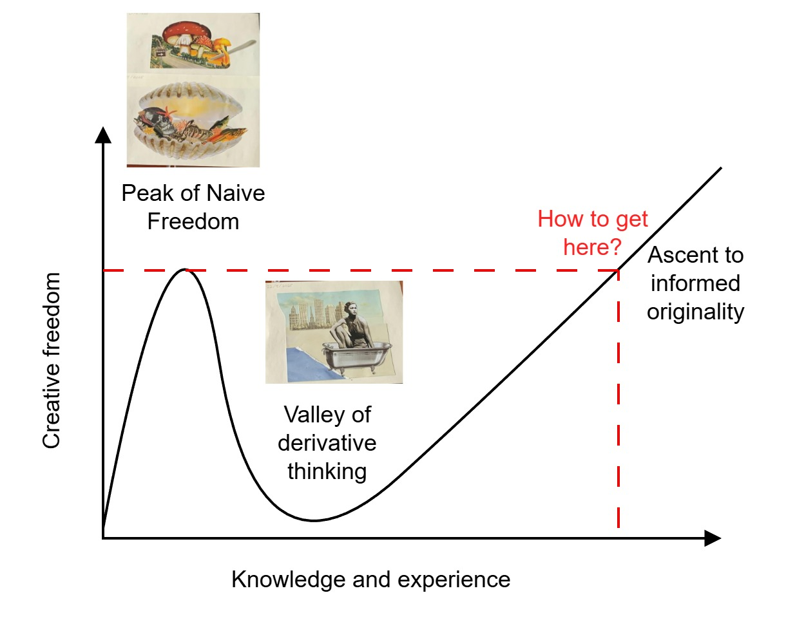
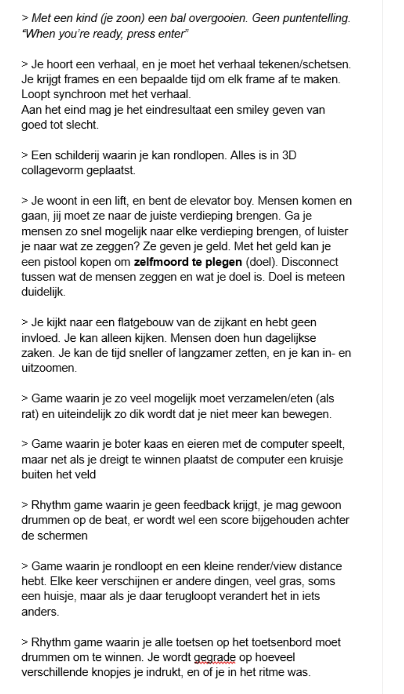
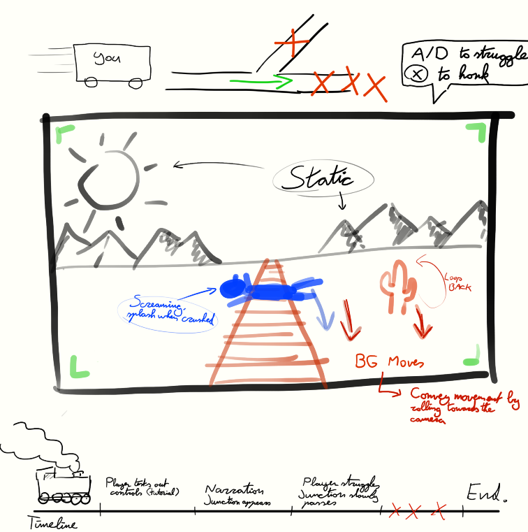
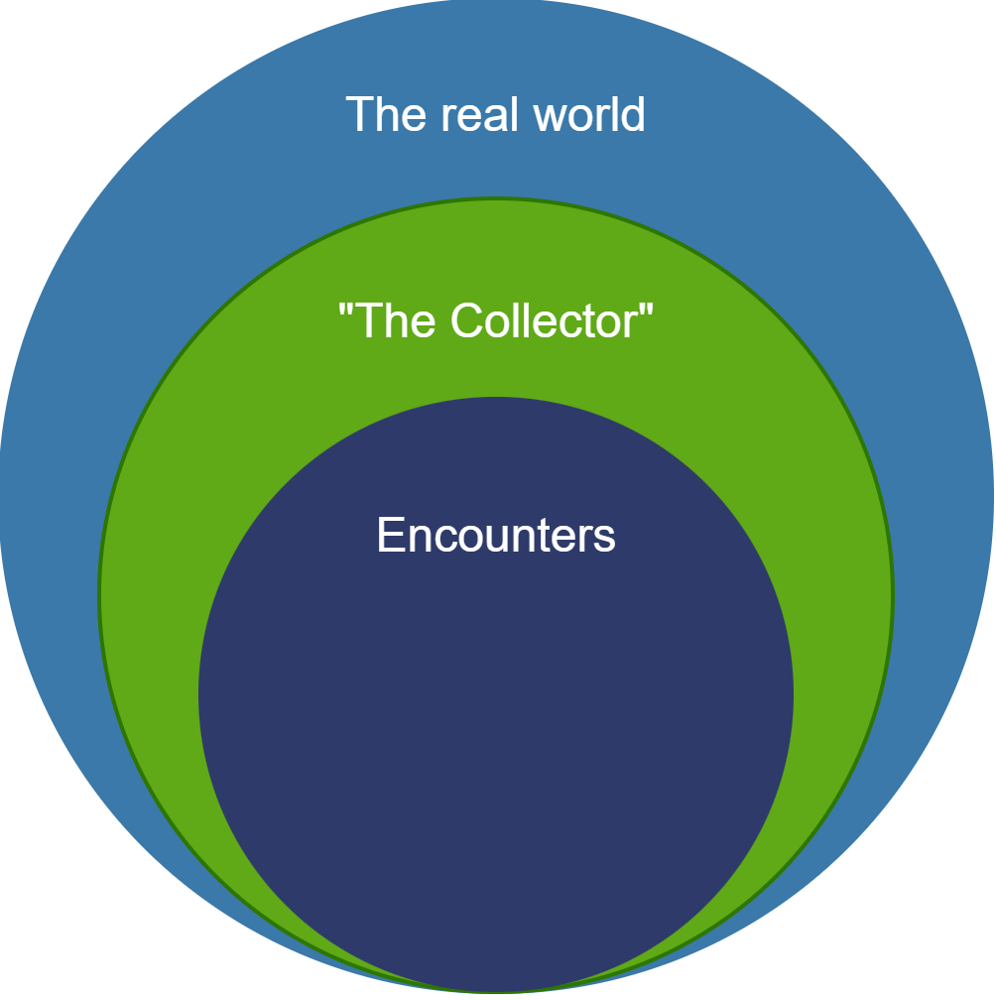

Virtual Encounters is a short narrative experience questioning what makes a game, a game: What if the player has agency but no influence? What if a rhythm game has no input prompts? And above all, does it even matter whether something is a game or not? The player experiences these topics through three short, experimental games, tied together by the enigmatic Collector.
Design Goal
During my first-year final project, I faced a paradox: the more I learned about game design, the more this knowledge and "rules" constrained my creativity. I identified this as "the unconscious limitation of my creative freedom through experience."
My core design question became:
How can I lower the threshold for what is considered a game, and challenge both myself and players to let go of traditional design rules?
Experiment
The Creativity Paradox
To explore whether knowledge really limits creativity, I conducted a personal experiment using collage, an art form I was unfamiliar with.
I made two collages without any prior knowledge.
I studied collage tutorials and analysed famous works.
I made a final collage using my newfound expertise.
Though more technically balanced, my final collage was seen as more derivative. Viewers preferred the first, more personal collages.

This effect mirrors the Dunning-Kruger curve, which outlines how knowledge and confidence relate.
Naive Freedom
This mirrors the Dunning-Kruger effect. Without knowledge of conventions, I created freely and boldly. I call this the Peak of Naive Freedom.
Informed Originality
To reclaim originality through knowledge, I took on these design conventions:
Embracing unfamiliarity: I chose unfamiliar techniques, like 3D development in Godot and working with professional voice actors, and using images to build the entire game.
Reducing pressure: Instead of trying to create one game to rule them all, I made several smaller games, encouraging creative risks.
Games
Concepting
I sat down with fellow game designers to outline the essential elements that make up a game:
Rules
Input (controls)
Sensory stimulation
Coherence
Friction
Interaction
Feedback mechanisms
Desired outcome
Keeping these elements in mind, I brainstormed as many concepts as possible, each lacking one or more of the listed elements. Even stupid sounding ones, like simply drawing what the computer says and having to judge your own work afterwards.
By thoroughly concepting, I had the luxury of choosing the concepts that fit the project the best: each had to be distinct enough, highlighting the lack of a different aspect of play.

A sample of the list of the games I concepted
Game 1: "Trolley Problem"
In Trolley Problem, the player takes on the role of the trolley itself, tackling the classic moral dilemma from a different perspective. While the player does have some agency (slowing down, speeding up, honking) these inputs do not affect the outcome.
The trolley inevitably runs over three people, emphasizing the illusion of control and the idea that the player, like the trolley, has no real agency.
...

A rough sketch including a timeline and movement mechanics
Playtest
I wanted to instill a sense of helplessness, as the player tries to change the outcome.
Playtesting showed that the timing of the events plays a crucial role in delivering this feeling. By extending the moment before running over the people, players had more time to experiment and realize their lack of influence, which significantly increased the effect.
Game 2: "Jam the Keys"
In Jam the Keys, the player has to entertain an audience by jamming on their (physical) keyboard. Background music plays as an indication of what to play, but there is no judging, the player is completely free to play the way they want. If the player stops, the audience boos and the music quiets down, cues for them to continue playing, to which the audience cheers.
When the player stops jamming, the music quiets down, and the audience stops dancing and starts booing.
Original concept audio. While full of energy, it's too fast and overwhelming.Second iteration. Slower, allowing the player to get into a groove. Still too full.Final iteration. It features a much more interesting rhythm, is not overwhelming, and includes a synth solo where the player can jam at their own pace!
Music design
Jam the Keys' single most important design consideration was the music. It had to be rhythmic, catchy, and just the right tempo. Above all, it had to leave room for the player to express themselves on their keyboard. It took me two rejected concepts to end up with the final result.
On the left you can hear short samples from the track used in the game.
Game 3: "Catch"
In Catch, the player plays a game of catch with a little girl over a fence, with no measurable progress or reward. The original concept was for the player to consciously decide to stop playing after a while. However, after playtesting, I found that suddenly making the girl (and in turn, the gameplay) disappear, leaving the player with only the idyllic scene and music, was much more impactful, and even made players emotional.
Narrative
The Collector
Through playtesting I discovered that the three games did leave an impact, but overall the game felt disjointed. So, I added the Collector, a figure that guides the player through the experiences. This helped immensely, and gave me the opportunity to give the game a narrative spin, and introduce humour.
The Collector appears after each encounter, and helps the player digest what unfolded through voice acted dialogue.
The player faces the Collector, and interacts with him through hand gestures.

Immersion Onion
Using fourth wall breaks and humour, I used the Collector to bridge the gap between our world, and the (quite abstract) encounters.
Post Mortem
To measure the game's impact, I issued a questionnaire to people that played the game. “Has this game broadened your idea of what a game can be? How?”
Across the 14 respondents, three main trains of thought surfaced:
“Not really, its a storyline game-ish but you can't really control your own actions.”
“I personally consider these types of experiences to be games already!”
“Yes, in the sense of realising that […] games can be considered games even with minimal controls and/or the simplest ideas.”